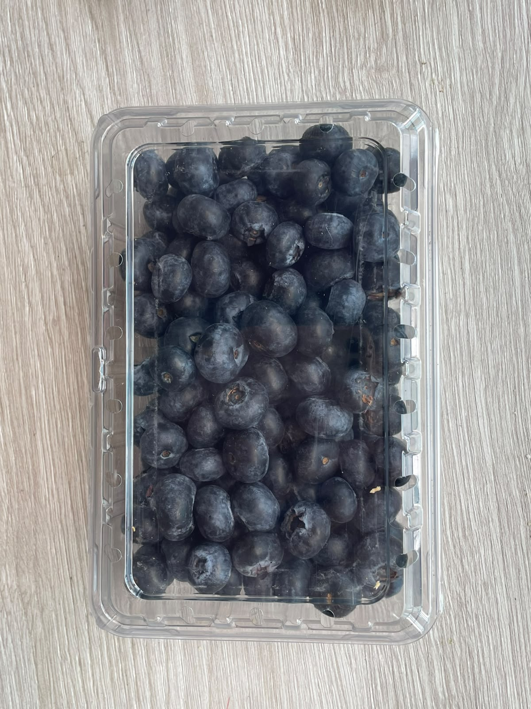

Misión
Cultivar arándanos de alta calidad con prácticas responsables y acercar la frescura del campo a cada cliente.
Cultivamos arándanos con cuidado, en el corazón de Tibaná. Frescos, locales y listos para compartir.
Un vistazo a nuestra finca, a las manos que cuidan cada planta y al camino de nuestros arándanos desde Tibaná hasta tu mesa.
Ven a conocer la fincaCuidamos cada detalle, desde el suelo y las plantas hasta el momento de la cosecha. Así llevamos arándanos frescos de Tibaná a las mesas que nos inspiran.
Cultivar arándanos de alta calidad con prácticas responsables y acercar la frescura del campo a cada cliente.
Ser un referente regional en agricultura sostenible e innovación, conectando a más personas con el origen de sus alimentos.
Conoce la experiencia de quienes nos visitan y descubre cómo cada cosecha también reúne a nuestra comunidad.

25.000 COP
Recorre los cultivos, conoce a quienes los cuidan y disfruta de una finca familiar en el corazón de Boyacá. Nos encantará recibirte.
Agenda tu visita ↗